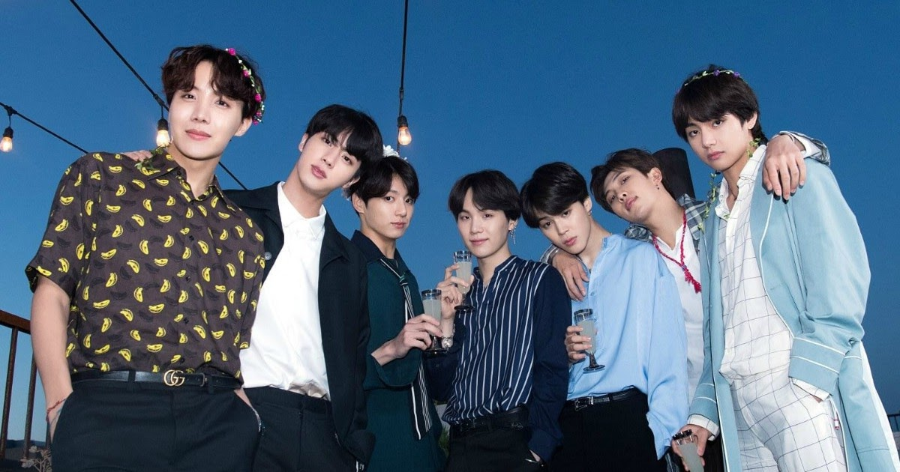

MOVIE/K-DRAMA: NEVERTHELESS
NEVERTHELESS is one of my favorite K-DRAMA
since I love the main woman character there, Han So-Hee.
Aside from the beautiful and great characters in this series,
I also admire their acting here and also its story that
many people can really relate to.
MUSIC: SANCTUARY by JOJI
